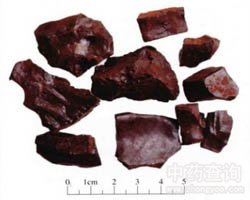

儿茶

拼音
ér Chá
别名
儿茶膏、孩儿茶、黑儿茶
来源
本品为豆科合欢属植物儿茶树Acacia catechu（L. f.） Willd.的去皮枝、干的干燥煎膏。冬季采收枝、干，除去外皮，砍成大块，加水煎煮，浓缩，干燥。
生境分布
分布于云南南部地区，海南岛有栽培。
药材特点
落叶乔木，高6～13米。小枝细，有棘刺。叶为二回双数羽状复叶，互生；叶轴基部有棘针双生，扁平状；叶轴上着生羽片10～20对；每羽片上具小叶30～50对，小叶条形，两面被疏毛。8～9月开花，总状花序腋生，花萼基部连合成筒状，上部分裂，有疏毛；花瓣5，长披针形，黄色或白色；雄蕊多数，伸出花冠之外；雌蕊1，子房上位，长卵形。荚果扁而薄，连果梗长6～12厘米，宽1～2厘米，种子7～8粒。
性状
本品呈方形或不规则块状，大小不一。表面棕褐色或黑褐色，光滑而稍有光泽。质硬，易碎，断面不整齐，具光泽，有细孔，遇潮有黏性。无臭，味涩、苦，略回甜。
性味
苦、涩，微寒。
功能主治
收湿生肌敛疮。用于溃疡不敛，湿疹，口疮，跌扑伤痛，外伤出血。
用法用量
1～3g，包煎，多入丸散服。外用适量。
化学成分
含儿茶鞣酸20～50％，儿茶精（dcatechin，C15H14O6）2～20％及表儿茶酚（epicatechol）、粘液质、脂肪油、树胶及蜡等。
药理作用
1：儿茶水溶液能抑制家兔十二指肠及小肠的蠕动：且能促进盲肠的逆蠕动，而有止泻作用；但对大肠几乎没有作用
2：儿茶在体外有较强的杀死腹水癌细胞作用
3：儿茶煎剂对金黄色葡萄球菌、白喉杆菌、变形杆菌、福氏痢疾杆菌及伤寒杆菌均有抑制作用；对于常见治病性皮肤真菌亦有抑制作用
4：其叶的提取物对金黄色葡萄球菌、大肠杆菌均有抑制作用
摘录
《中国药典》